OrbiRob Kullanıcı Kitapçığı
Bölüm 1 OrbiRob - Genel Tanıtım
OrbiRob, eğitim ve araştırma amaçlı geliştirilen, açık kaynaklı ve bütünleşik bir robotik geliştirme platformudur.
Mobil taban platformu, Raspberry Pi 5 bilgisayarı, ROS 2 altyapısı, ORBBEC Gemini 335L RGB-D kamera, RPLIDAR 3C ve çeşitli diğer bileşenleriyle OrbiRob; robotik uygulamaların geliştirilmesi, test edilmesi ve öğrenilmesi için ihtiyaç duyulan donanım ve yazılım bileşenlerini tek bir platformda bir araya getirir. Tüm bileşenler, ek entegrasyon gerektirmeden birlikte çalışacak şekilde tasarlanarak kullanıma hazır, bütünleşik bir robotik geliştirme ortamı sunar.
OrbiRob, açık kaynaklı ROS 2 ekosisteminin sunduğu güçlü yazılım altyapısından, kapsamlı dokümantasyondan ve geniş geliştirici topluluğundan yararlanır. Bu sayede kullanıcılar, robotik geliştirme çalışmalarına hızlı bir şekilde başlayabilir; algılama, hareket, navigasyon, haritalama ve yapay zekâ gibi farklı alanlarda kendi ROS 2 tabanlı uygulamalarını geliştirebilir ve test edebilir.
Güçlü işlem altyapısı, gelişmiş algılama yetenekleri ve modüler yapısıyla OrbiRob; öğrenmeden araştırmaya, prototiplemeden uygulama geliştirmeye kadar farklı ihtiyaçlara cevap veren, erişilebilir ve kapsamlı bir robotik platform olarak Türkiye’de tasarlanmakta ve üretilmektedir.
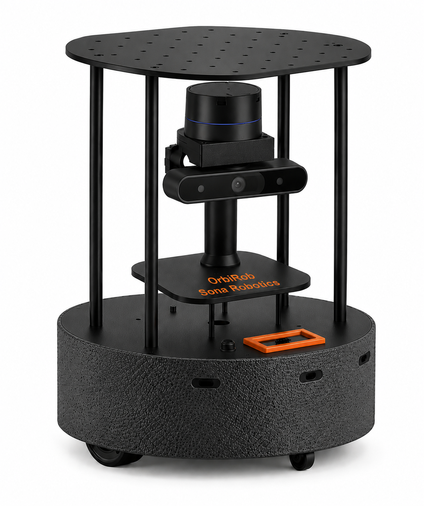
Bölüm 2 Güvenlik Bilgileri
Çalıştırmadan önce okuyunuz.
2.1 Genel güvenlik önlemleri
-
•
Robotu kuru ve dengeli bir zemin üzerinde çalıştırılmalıdır.
-
•
Uygun algılama veya fiziksel engelleme sağlanmadıkça robotu merdiven, kenar ve düşme tehlikesi bulunan bölgelerden uzak tutulmalıdır.
-
•
Parmakları, saçları, giysileri ve gevşek nesneleri hareketli parçalardan ve tekerleklerden uzak tutunuz.
-
•
Robot üzerine ek yük veya bileşen yerleştirilirken, robotun toplam ağırlığının 9 kg’ı aşmamasına dikkat edilmelidir.
-
•
Robotun üstüne dereceden sıcak herhangi bir nesne koyulmamalı veya robotla temas ettirilmemelidir.
-
•
Robot üzerine sıvı dökülmemeli ve sıvı püskürtülmemelidir.
-
•
Bakım yapmadan veya bağlı donanımı değiştirmeden önce gücü kesilmelidir.
2.2 Batarya ve şarj
-
•
Yalnızca uyumlu batarya, şarj cihazı ve aksesuarları kullanınılmalıdır.
-
•
Şarj cihazları ıslak ellerle kullanılmamalıdır.
-
•
Belirtilen şarj edilebilir bataryayı ve uygun şarj ekipmanını kullanılmalıdır.
-
•
Standart Türkiye tipi (220 V) elektrik prizini kullanarak şarj edilmelidir.
-
•
Ürün, hiçbir tür güç dönüştürücü ile kullanılmamalıdır.
-
•
Yalnızca kapalı alanda şarj edilmelidir.
-
•
Batarya kısa devre edilmemeli, delinmemeli veya aşırı ısıya maruz bırakılmamaldır.
-
•
Uzun süreli depolama veya taşıma öncesinde batarya çıkarılmalıdır.
Robotu yalnızca bu kılavuzda açıklanan şekilde kullanınız. Garanti koşullarının geçerli olması için, bu kılavuzda belirtilen tüm kullanım ve güvenlik talimatlarına uyulmalıdır.
Bölüm 3 Robotun Çalıştırması
Bu talimatlar, robota güç verilmesi ve kullanıcı bilgisayarı ile robot arasında temel iletişimin kurulması için gerekli yapılandırmayı gerçekleştirir.
OrbiRob’un çalıştırılabilmesi için LiPo bataryanın robot üzerindeki batarya bölmesine doğru şekilde yerleştirilmesi ve bağlantısının yapılması gerekmektedir. Bundan sonra robota güç verilebilinir. Bir sonraki adım ise, robotun ağ yapılandırılmasının yapılmasıdır. OrbiRob artık erişime hazırdır.
3.1 Batarya Takılması
Batarya bölmesine Şekil 3.1’de gösterildiği üzere robotun mobil platformunun alt plakasından erişilebilinmektedir. Kapak robot işlevsel olduğunda Şekil 3.1(b)’da gösterildiği üzere kapalı olacaktır. Batarya takılırken aşağıdaki adımlar sırasıyla uygulanmalıdır.
-
1.
Robotun kapalı olduğundan ve güç bağlantısının kesilmiş olduğundan emin olunmalıdır.
-
2.
Bataryanın şarjlı olduğu teyit edilmelidir.
-
3.
Batarya bölmesi ve batarya bağlantı kabloları kontrol edilmelidir. Bölme içerisinde bataryanın yerleşimini engelleyebilecek herhangi bir nesne bulunmamalıdır.
-
4.
LiPo batarya, bağlantı kabloları ve konnektörleri robotun ilgili bağlantı noktalarına erişebilecek şekilde Şekil 3.1(a)’de gösterildiği üzere batarya bölmesine yerleştirilmelidir.
-
5.
Batarya, bölme içerisinde hareket etmeyecek ve bağlantı kablolarına aşırı gerilim uygulamayacak şekilde konumlandırılmalıdır. Bataryanın kablolarının sıkışmamasına veya keskin kenarlara temas etmemesine dikkat edilmelidir.
-
6.
Bataryanın güç konnektörü ilgili batarya güç bağlantısına bağlanmalıdır. Konnektörün doğru yönde ve tam olarak oturduğu kontrol edilmelidir.
-
7.
Bataryanın bağlantısı yapıldıktan sonra kablolar batarya bölmesi içerisinde düzenli bir şekilde yerleştirilmelidir. Kabloların kapak ile batarya arasında sıkışmamasına dikkat edilmelidir.
-
8.
Bataryanın bölme içerisinde doğru konumda bulunduğu ve herhangi bir yönde aşırı hareket etmediği kontrol edilmelidir.
-
9.
Batarya Bölmesi Kapağı, batarya ve kabloların üzerine baskı uygulamayacak şekilde yerine takılmalıdır.
-
10.
Kapak yerine takıldıktan sonra kapağın düzgün şekilde oturduğu ve sabitlendiği kontrol edilmelidir.
-
11.
Bataryanın robot ile bağlantısı ve fiziksel yerleşimi son kez kontrol edildikten sonra robot çalıştırılmalıdır. “‘
Uyarı: LiPo batarya takılmadan önce bataryada şişme, deformasyon, fiziksel hasar veya başka bir anormallik bulunmadığı kontrol edilmelidir. Hasarlı veya şişmiş bataryalar kullanılmamalıdır.
Önemli: Batarya bölmesi kapağı kapatılmadan önce batarya bağlantı kablolarının doğru şekilde yerleştirildiği kontrol edilmelidir. Kabloların kapak ile batarya arasında sıkışması, kablolara veya konnektörlere zarar verebilir.
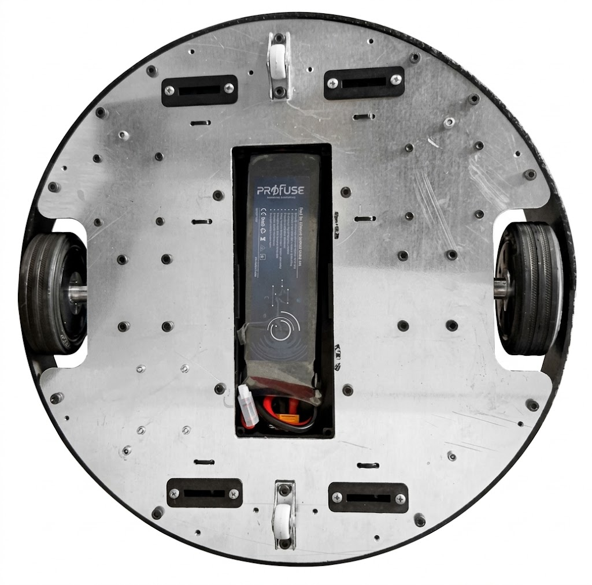

3.2 Güç Açma-Kapatma
Robotu açmak için güç açma-kapatma düğmesini kullanınız.
3.2.1 Güç Açma
Robota bağlanmadan önce gücün açık olduğunu teyit ediniz.

3.2.2 Güç Kapatma
Gücü kapatmak için mutlaka önce robotun işlemcisinin düzgün şekilde kapatılması gerekir. Bunun için iki seçenek kullanılabilinir:
-
•
Robota bağlı olduğu durumlarda, doğrudan Ubuntu 24.02’nin shutdown komunutu kullanmak
-
•
TFT LCD dokunmatik ekran üzerinden SHUTDOWN seçeneğinin seçilmesi ve ekran tamamiyle kapandıktan sonra güç açma-kapatma düğmesini kapalı duruma getirmek gerekir.
Robotun bu şekilde düzgün olarak kapatılmadan güç bağlantısının kesilmesi, robotun belleğindeki dosya sisteminde bozulmalara ve veri kaybına neden olabilir. Bu durum özellikle ROS 2 yapılandırmaları, kayıt dosyaları ve sistem dosyalarının zarar görmesine veya robotun yeniden başlatıldığında düzgün çalışmamasına yol açabilir.
3.2.3 Şarj
Şarj edilebilir batarya, mobil tabana ve bağlı elektronik sistemlere güç sağlar. Şarj ve çalışma süresi bataryanın durumuna ve robotun kullanım şekline bağlıdır. Onaylı şarj ekipmanını robotla birlikte verilen talimatlara uygun şekilde bağlayınız.
Şarj işleminin veya normal çalışmanın devam edip etmediğini belirlemek için TFT LCD Dokunmatik ekran üstünden takip yapılabilir. Bunun için micro-ROS Agent yazılımının çalıştırılması gerekir. Bunun için:
source run_agent_usb.sh
çalıştırılması yeterlidir. İlgili yazılımların kurulumuna ait ayrıntılar Ek A.4’de sunulmuştur.
TFT LCD Dokunmatik ekranda Şekil 3.3(a)’de gösterilen ana menüye gidilerek, BATTERY seçeneği seçilir. Bataryanın voltaj ve kalan şarj yüzdesi Şekil 3.3(b)’de görülen menüden takip edilebilir.

3.3 İyi Kullanım Uygulamaları
-
•
Uzun gösterimlerden önce bataryayı tamamen şarj ediniz.
-
•
Bataryanın şarj cihazı ile şarj edilmesi için verilen adımlar sırasıyla uygulanmalıdır.
-
•
Robotu kuru bir yerde saklayınız.
-
•
Batarya kullanılmayacaksa robot üzerinden ayrı olarak, kuru, serin ve güvenli bir ortamda muhafaza edilmelidir.
-
•
Deşarj olmuş bataryayı uzun süre kullanılmadan bırakmayınız.
-
•
Yalnızca uyumlu yedek bataryalar kullanınız.
Hasarlı güç kablosu, konnektör veya batarya ile robotu çalıştırmayınız. Aşırı ısınma, olağandışı koku veya görünür hasar fark ederseniz sistemi kullanmayı durdurunuz.
3.4 Robotu Çalıştırma
OrbiRob 4’ün kurulumundaki ikinci adım, robotu açmak ve Wi-Fi ağınıza bağlamaktır. Robotu açmak için:
-
•
Batarya, batarya bölmesine yerleştirilmeli ve şarj seviyesinin yeterli olduğu kontrol edilmelidir.
-
•
Robotun gücü açılmalıdır.
-
•
OrbiRob başlatılacaktır. Robotun başlatma işleminin tamamlanması için bir süre beklenmelidir.
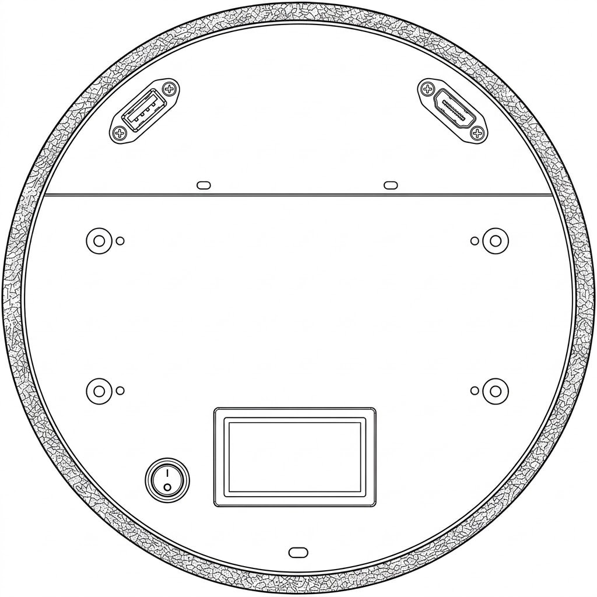
3.5 Robotun Kablosuz Ağ Yapılandırması
Robot ilk kez çalıştırıldığında, kablosuz ağ yapılandırılabilmesi gerekir. Bunun için 2 alternatif bulunmaktadır:
-
•
Fiziksel Bağlantı
-
•
TFT LCD Dokunmatik Ekrandan Yapılandırma
3.5.1 Fiziksel Bağlantı
Robot ile fiziksel olarak bağlantı kurmak ve robotun işlemcisi üzerinden gerekli yapılandırmaları gerçekleştirmek için bir ekran ve klavye bağlanmalıdır. Ekran, robotun işlemcisindeki **HDMI bağlantı noktası** üzerinden; klavye ise **USB bağlantı noktası** üzerinden bağlanarak robotun işletim sistemine doğrudan erişim sağlanabilir. Bu bağlantı, özellikle kablosuz ağ yapılandırması gibi işlemlerin robot üzerinde doğrudan gerçekleştirilmesine olanak tanır.
-
1.
OrbiRob’un kapalı olduğundan emin olunmalıdır.
-
2.
OrbiRob şasisinin üst plakasında bulunan ve Şekil 3.4’de gösterilen HDMI girişine uygun bir HDMI kablosu kullanılarak bir ekrana bağlanmalıdır. Ekranın ilgili HDMI girişinin seçili olduğu kontrol edilmelidir.
-
3.
Klavye, OrbiRob şasisinin üst plakasında bulunan ve Şekil 3.4’de gösterilen USB girişine bağlanmalıdır.
-
4.
Ekran ve klavye bağlantılarının doğru şekilde yapıldığı kontrol edilmelidir.
-
5.
OrbiRob’un gücü açılmalıdır.
-
6.
Raspberry Pi’nin başlatılması tamamlanana kadar beklenmelidir. Başlatma işlemi tamamlandığında Raspberry Pi’nin görüntüsü bağlı ekranda görüntülenecektir.
-
7.
Klavye kullanılarak Raspberry Pi üzerinde oturum açılmalıdır.
-
8.
Raspberry Pi’nin işletim sistemi üzerinden mevcut kablosuz ağlar görüntülenmeli ve kullanılacak Wi-Fi ağı seçilmelidir.
-
9.
Seçilen Wi-Fi ağına ait parola girilmelidir. Parola girilirken karakterlerin ekranda görünür şekilde görüntüleneceği dikkate alınmalıdır.
-
10.
Wi-Fi bağlantısının başarıyla kurulduğu kontrol edilmelidir.
-
11.
İnternet bağlantısı yapılandırıldıktan sonra HDMI ekran ve USB klavye bağlantıları çıkarılabilir. Bu bağlantıların robotun normal çalışma sırasında sürekli olarak bağlı tutulması gerekmez.
Uyarı: Wi-Fi parolası girilirken parola karakterleri ekranda görünür şekilde görüntülenecektir. Bu nedenle parola girme işlemi sırasında ekranın yetkisiz kişiler tarafından görülmemesine dikkat edilmelidir.
Not: HDMI bağlantısı Raspberry Pi görüntüsünün harici bir ekranda görüntülenmesi, USB bağlantısı ise klavye aracılığıyla Raspberry Pi’nin kontrol edilmesi amacıyla kullanılmalıdır.
3.5.2 TFT LCD Dokunmatik Ekran ile Yapılandırma
OrbiRob’un internete kurulumu veya hangi ağa bağlı olduğunun seçimi veya takibi TFT LCD dokunnmatik ekrandan da yapılabilir. TFT LCD Dokunmatik ekranda seçimleri yapmak için OrbiRob ile gelen kalemin kullanılması önerilir.
-
•
Bunun için Şekil 3.5’de gösterilen WIFI seçeneği seçilir.
-
•
Ekranda Şekil 3.5(b)’de görüldüğü üzere bağlantı sağlanır.
-
•
Farklı bir bağa bağlanılmak istenildiğinde, NETWORKS seçeneği seçilir.
-
•
Şekil 3.5(c)’de görüldüğü üzere ağların tarama işlemine başladığı görülür.
-
•
Tarama bitince Şekil 3.5(d)’de görüldüğü üzere tüm sezimlenen ağlar ekranda görülür. Farklı bir ağa bağlanılmak istenildiğinde, ilgili ağ seçilir.
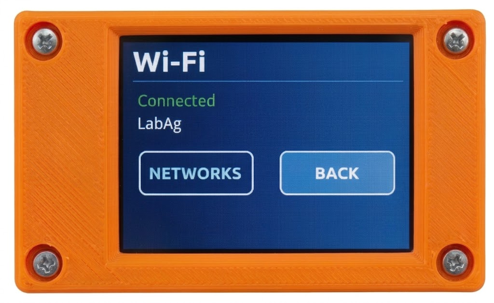
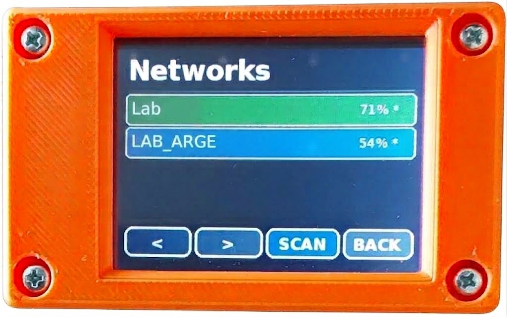
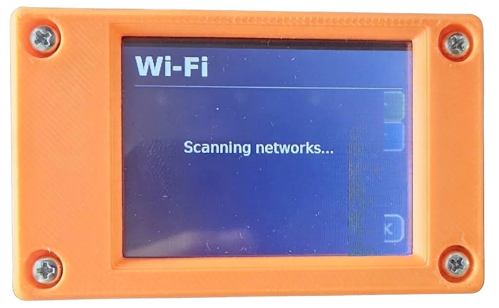
3.6 Robota SSH ile Bağlanılması
İnternet bağlantısının yapılandırılmasının ardından Raspberry Pi’ye uzaktan erişim sağlamak için SSH (Secure Shell) bağlantısı kullanılabilir. SSH bağlantısı sayesinde Raspberry Pi, HDMI ekran ve USB klavye bağlanmasına gerek kalmadan başka bir bilgisayar üzerinden kontrol edilebilir.
SSH bağlantısının kurulabilmesi için Raspberry Pi’nin ve bağlantı yapılacak bilgisayarın aynı yerel ağa bağlı olması gerekmektedir.
-
1.
Raspberry Pi’nin açık ve internete bağlı olduğu kontrol edilmelidir.
-
2.
Raspberry Pi’nin IP adresi öğrenilmelidir. IP adresi, Raspberry Pi üzerinde terminal açılarak aşağıdaki komut ile görüntülenebilir:
hostname -IGörüntülenen IP adresi not edilmelidir. Örneğin:
192.168.1.25 -
3.
SSH bağlantısının yapılacağı bilgisayarda bir terminal açılmalıdır.
-
4.
Terminal üzerinden aşağıdaki komut çalıştırılmalıdır:
ssh <kullanici_adi>@<IP_adresi>Örneğin, Raspberry Pi’nin kullanıcı adı orbirob ve IP adresi 192.168.1.25 ise:
ssh orbirob@192.168.1.25 -
5.
İlk bağlantıda Raspberry Pi’nin güvenlik anahtarının doğrulanması istenebilir. Ekranda görüntülenen güvenlik uyarısı kontrol edilmeli ve bağlantının doğru cihaza yapıldığı doğrulandıktan sonra bağlantının kabul edilmesi sağlanmalıdır.
-
6.
Raspberry Pi kullanıcı hesabının parolası istenmelidir. Parola klavye kullanılarak girilmelidir.
-
7.
Parola doğru girildiğinde Raspberry Pi’ye SSH bağlantısı kurulacaktır. Bağlantının başarılı olması durumunda Raspberry Pi’nin terminali üzerinden komut çalıştırılabilir.
-
8.
SSH oturumundan çıkmak için aşağıdaki komut kullanılmalıdır:
exit
Not: SSH bağlantısı sırasında parola girilirken karakterler terminal ekranında görüntülenmez. Bu durum normaldir. Parola girildikten sonra Enter tuşuna basılmalıdır.
Önemli: Raspberry Pi’nin IP adresi, ağ yapılandırmasına bağlı olarak değişebilir. SSH bağlantısı kurulamadığında öncelikle Raspberry Pi’nin ağa bağlı olduğu ve güncel IP adresinin kullanıldığı kontrol edilmelidir.
3.7 Robota Uzaktan Masaüstü Erişimi
Robotun geliştirme ve işletim bilgisayarına, aynı ağ üzerinden veya uzak bir ağ bağlantısı kullanılarak erişmek için çeşitli uzaktan masaüstü yazılımları kullanılabilir. Özellikle ROS 2, RViz, Gazebo, Qt Creator ve Visual Studio Code gibi grafik arayüzlü uygulamaların uzaktan çalıştırılması için aşağıdaki seçenekler değerlendirilebilir.
-
•
RustDesk
-
–
Ücretsiz ve açık kaynaklı bir uzaktan masaüstü çözümüdür.
-
–
Windows, Linux ve diğer desteklenen işletim sistemleri arasında grafiksel masaüstü erişimi sağlar.
-
–
ROS 2 geliştirme ortamına uzaktan erişim, RViz ve Qt Creator gibi grafik uygulamaların kullanımı için uygundur.
-
–
Dosya aktarımı, pano paylaşımı ve uzaktan klavye/fare kullanımı gibi temel özellikleri destekler.
-
–
İnternet üzerinden erişim gerektiğinde, güvenlik amacıyla VPN veya kurumsal ağ altyapısı ile birlikte kullanılması önerilir.
-
–
Robot geliştirme bilgisayarına düzenli olarak uzaktan erişilmesi gereken durumlarda önerilen seçeneklerden biridir.
-
–
-
•
Ubuntu Remote Desktop (RDP)
-
–
Ubuntu’nun desteklediği yerleşik uzak masaüstü erişim yöntemidir.
-
–
RDP protokolü üzerinden özellikle Windows bilgisayarlardan Ubuntu masaüstüne erişim sağlanabilir.
-
–
Aynı yerel ağ (LAN) içerisinde robot geliştirme bilgisayarına erişim için pratik bir çözümdür.
-
–
RViz, Qt Creator, Visual Studio Code ve benzeri grafik uygulamalarının uzaktan kullanılmasına olanak sağlar.
-
–
Gazebo gibi grafik ve işlem yükü yüksek uygulamalarda uzak bağlantının performansı ağ bağlantısının bant genişliği ve gecikmesine bağlıdır.
-
–
İnternet üzerinden doğrudan erişim yerine VPN veya güvenli bir ağ bağlantısı kullanılması önerilir.
-
–
-
•
NoMachine
-
–
Linux üzerinde yüksek performanslı grafiksel uzak masaüstü erişimi için geliştirilmiş bir çözümdür.
-
–
RViz, Gazebo, Qt Creator ve diğer grafik ağırlıklı ROS 2 uygulamalarının uzaktan kullanımında iyi bir performans sunabilir.
-
–
Özellikle grafik ekran güncellemelerinin yoğun olduğu uygulamalarda geleneksel VNC tabanlı çözümlere göre daha akıcı bir kullanım sağlayabilir.
-
–
Ürünün güncel sürümleri için lisans koşulları ve ücretsiz kullanım seçenekleri üreticinin güncel lisans politikasına göre kontrol edilmelidir.
-
–
-
•
xrdp
-
–
Linux üzerinde RDP sunucusu sağlayan ücretsiz ve açık kaynaklı bir çözümdür.
-
–
Windows’un yerleşik Uzak Masaüstü istemcisi kullanılarak Ubuntu sistemine erişim sağlanabilir.
-
–
Özellikle aynı ağ veya VPN üzerinden gerçekleştirilen geliştirme çalışmalarında kullanılabilir.
-
–
ROS 2 geliştirme ortamına erişim için uygun olmakla birlikte, grafik hızlandırma ve masaüstü oturumu yapılandırması kullanılan Ubuntu sürümüne bağlı olarak ek ayar gerektirebilir.
-
–
-
•
TigerVNC
-
–
Linux sistemlerde yaygın olarak kullanılan ücretsiz ve açık kaynaklı bir VNC çözümüdür.
-
–
Uzaktan grafik masaüstü erişimi sağlar.
-
–
ROS 2 geliştirme ortamına erişmek için kullanılabilir.
-
–
RViz ve Gazebo gibi grafik uygulamalarında kullanılabilmesine rağmen, grafik performansı yüksek hızlı veya düşük gecikmeli çözümlere göre daha sınırlı olabilir.
-
–
İnternet üzerinden kullanılacaksa doğrudan VNC portunun açılması yerine VPN veya SSH tüneli gibi güvenli yöntemlerin kullanılması önerilir.
-
–
Bölüm 4 Yazılım
4.1 Robotun Programlanması
Robotun ana bilgisayarı olarak kullanılan Raspberry Pi 5 üzerinde Ubuntu işletim sistemi çalışmaktadır. Ubuntu, robotun yazılım ve donanım bileşenlerinin yönetildiği temel işletim ortamını sağlar.
Kullanıcı, terminal üzerinden Raspberry Pi 5’e bağlanarak dosya ve klasörleri yönetebilir, yazılımları çalıştırabilir, sistem ayarlarını yapılandırabilir ve gerekli geliştirme araçlarını kullanabilir. Robotun programlanması sırasında gerçekleştirilecek yazılım geliştirme, derleme ve sistem yönetimi işlemleri Ubuntu ortamı üzerinden yürütülür.
Robotun kontrol ve yazılım altyapısı ROS 2 (Robot Operating System 2)** üzerine kuruludur. ROS 2, robotun sensörleri, hareket sistemi ve diğer yazılım bileşenleri arasındaki iletişimi sağlayan modüler bir yapı sunar. Robotun işlevleri, ROS 2 düğümleri (node) olarak geliştirilebilir ve bu düğümler topic, service ve action* mekanizmaları aracılığıyla birbirleriyle iletişim kurabilir.
Kullanıcı, Python veya C++ kullanarak yeni ROS 2 düğümleri geliştirebilir veya mevcut düğümleri robotun gereksinimlerine göre yapılandırarak robotun hareket, algılama, haritalama ve navigasyon gibi yeteneklerini özelleştirebilir.
Robotun ilk kullanımı için her ikisi de, mevcut durumun en güncel versiyonları yüklenmiştir.
-
•
İşletim sistemi: Ubuntu 24.04
-
•
ROS: ROS 2 Jazzy
Ancak, işletim sistemi ve ROS 2 paketleri güncellendikçe, ilgili güncellerim kullanıcı tarafından yapılabilir. Ancak, böyle bir güncelleme yapılmadan önce, gerekli yedeklemenin yapılması önerilir. Ayrıca, robotun üstünde bulunan sensörlere ait kodların bu güncellemeyle uyumlu olduğunun teyit edilmesi uygun olur.
OrbiRob’un yazılımlarının ilgili github sayfasından erişim sağlanılacaktır:
https://github.com/SonaRobotics/OrbiRob
4.2 OrbiRob ROS2 Konuları (Topikleri)
OrbiRob’un yazılım bileşenleri arasındaki iletişim, ROS 2’nin konu (topic) tabanlı iletişim altyapısı üzerinden gerçekleştirilir. OrbiRob’a özel hareket ve algılama topikleri aşağıdaki şekildedir:
| /cmd_vel | |
| joint_states | |
| /parameter_events | |
| /pico/encoder_ticks | |
| /pico/motor_command | |
| /pico/proximity/distances_mm | |
| /pico/wheel_velocity |
/cmd_vel konusu, OrbiRob’un hareket kontrolünde kullanılan temel ROS 2 konusudur. Bu konu üzerinden robota doğrusal ve açısal hız komutları gönderilir. Komutlar
geometry_msgs/msg/TwistStamped
mesajı kullanılarak iletilir.
Mesaj içerisindeki linear.x alanı OrbiRob’un ileri veya geri yöndeki
doğrusal hızını, angular.z alanı ise dönme hızını belirler.
/cmd_vel konusu; klavye veya joystick ile manuel sürüşün yanı sıra
otonom hareket ve navigasyon uygulamalarında da kullanılabilir.
joint_states| konusu, robot üzerindeki eklem ve hareketli bileşenlerin durum bilgilerini yayınlamak için kullanılır. Bu konu üzerinden eklemlerin isimleri ile birlikte konum, hız ve gerektiğinde kuvvet ve tork bilgileri paylaşılabilir. OrbiRob’un hareketli mekanizmalarının durumunun izlenmesi ve robot modelinin ROS 2 içerisindeki güncel durumunun takip edilmesi için kullanılabilir.
/parameter_events konusu, ROS 2 düğümlerindeki parametre değişikliklerinin sistem içerisindeki diğer düğümlere bildirilmesini sağlar. Bir düğümün parametresi oluşturulduğunda, değiştirildiğinde veya silindiğinde ilgili olay bu konu üzerinden yayınlanır. Bu konu, doğrudan robot kontrolü amacıyla değil, ROS 2 sistemindeki parametre değişikliklerinin izlenmesi amacıyla kullanılır.
/pico/encoder_ticks konusu, OrbiRob’un motorlarına bağlı enkoderlerden elde edilen darbe (tick) bilgilerini yayınlar. Bu bilgiler, tekerleklerin dönme miktarının belirlenmesinde ve robotun hareketinin izlenmesinde kullanılır. Enkoder verileri, özellikle tekerlek odometrisi ve hareket kestirimi gibi uygulamalar için temel girdilerden biridir.
| x: 1250 |
| y: 1248 |
| z: 0 |
Burada x sol motorun enkoder verisini, y ise sağ motorun enkoder verisini içermektedir.
/pico/motor_command konusu, OrbiRob’un tekerleklerini hareket ettiren motorlara gönderilen kontrol komutlarının iletilmesi için kullanılır. ROS 2 üzerinde çalışan hareket kontrol düğümleri tarafından oluşturulan motor komutları Pico’ya aktarılır ve Pico tarafından motor sürücülerine uygulanır. Böylece ROS 2 üzerindeki üst seviye hareket kontrolü ile motorların düşük seviyeli kontrolü arasında iletişim sağlanır.
/pico/proximity/distances_mm konusu, OrbiRob üzerindeki yakınlık sensörleri tarafından ölçülen mesafe değerlerini milimetre cinsinden yayınlar. Bu değerler, robotun çevresindeki nesnelerin sensörlere olan uzaklığının belirlenmesini sağlar. Mesafe bilgileri; engel algılama, güvenli hareket ve robot davranışlarının çevresel koşullara göre değiştirilmesi gibi uygulamalarda kullanılabilir.
/pico/wheel_velocity konusu, OrbiRob’un tekerleklerine ait hız bilgilerini yayınlar. Pico tarafından elde edilen veya hesaplanan tekerlek hızları ROS 2 sistemine aktarılır ve robotun hareket durumunun izlenmesinde kullanılır. Bu bilgiler, hareket kontrolü, hız geri beslemesi ve odometri hesaplamaları gibi uygulamalarda değerlendirilebilir.
4.3 OrbiRob’un Sürülmesi
OrbiRob’u hareket ettirmek için çeşitli yöntemler kullanılabilir. Robotun hareket komutları, üzerinde çalışan Ubuntu 24.04 işletim sistemi ve ROS 2 Jazzy altyapısı üzerinden gönderilir. OrbiRob’u sürmeden önce robotun açık ve ROS 2 sisteminin çalışır durumda olduğundan emin olun.
4.3.1 Klavye ile Sürüş
OrbiRob’u sürmenin en basit yöntemlerinden biri, geliştirme bilgisayarında çalışan bir klavye teleoperasyon uygulaması kullanmaktır. Bunun için geliştirme bilgisayarı ile OrbiRob’un aynı ROS 2 ağı üzerinde bulunması ve birbirleriyle iletişim kurabilmesi gerekir.
4.4 Tipik kontrol sırası
-
1.
İletişim arayüzünü başlatınız.
-
2.
Gerekli OI çalışma modunu başlatınız.
-
3.
Hız ve diğer hareket parametrelerini ayarlayınız.
-
4.
Sensör paketlerini okuyunuz.
-
5.
Sensör verilerine göre robot davranışını güncelleyiniz.
Hareket içeren programları önce düşük hızda test ediniz. İnsanları ve nesneleri robotun hareket yolundan uzak tutunuz.
4.5 Kullanıcı Arayüzü
OrbiRob, robotun manuel olarak kontrol edilmesini, haritalama ve lokalizasyon işlemlerinin gerçekleştirilmesini ve navigasyon durumunun izlenmesini sağlayan bir grafik kullanıcı arayüzüne sahiptir. Arayüz üzerinden robotun hareketi doğrudan kontrol edilebilir, hareket hızları ayarlanabilir ve robotun mevcut çalışma durumu takip edilebilir.

4.5.1 Gösterime hazırlık
Robotu açık ve temiz bir zemin üzerine yerleştiriniz. Yakında merdiven, kablo veya kırılabilir nesne bulunmadığından emin olunuz.
4.5.2 Manuel Kontrol
Manuel Kontrol bölümü, OrbiRob’un kullanıcı tarafından doğrudan sürülmesini sağlar. Arayüzde bulunan yön tuşları kullanılarak robot ileri, geri, sağa ve sola hareket ettirilebilir veya çapraz yönlerde ilerletilebilir. Ortadaki STOP düğmesi kullanılarak robotun hareketi hızlı bir şekilde durdurulabilir. Bu bölüm, özellikle haritalama öncesinde robotun ortam içerisinde manuel olarak hareket ettirilmesi ve robotun hareketlerinin doğrudan kullanıcı tarafından kontrol edilmesi amacıyla kullanılabilir.
4.5.3 Hız Ayarları
Manuel kontrol sırasında OrbiRob’un hareket hızları arayüz üzerinden ayarlanabilir. Linear speed ayarı robotun doğrusal hareket hızını, Turning speed ayarı ise dönme hızını belirler. Kullanıcı, ilgili kaydırma çubuklarını kullanarak robotun hareket hızını çalışma koşullarına ve gerçekleştirilen göreve uygun şekilde değiştirebilir.
4.5.4 Yöngüdüm
Navigation bölümü, OrbiRob’un yöngüdüm durumunun izlenmesini sağlar. Bu bölümde robotun çalışma modu, mevcut durumu, kullanılan harita ve konum durumu görüntülenebilir. Böylece kullanıcı, robotun hangi modda çalıştığını ve navigasyon için gerekli harita ve lokalizasyon bilgilerinin mevcut olup olmadığını arayüz üzerinden takip edebilir.
4.5.5 Haritalama
Mapping bölümü, OrbiRob’un bulunduğu ortamın haritasının oluşturulması ve yönetilmesi için kullanılır. Kullanıcı, harita için bir isim belirleyerek haritalama işlemini başlatabilir ve tamamlanan haritalama işlemini durdurarak kaydedebilir. Manual Start, Start Mapping, Stop Mapping ve Save Map düğmeleri kullanılarak haritalama sürecinin farklı aşamaları kontrol edilebilir. Oluşturulan haritalar daha sonra lokalizasyon ve navigasyon işlemlerinde kullanılabilir.
4.5.6 Konumlama
Localization bölümü, OrbiRob’un bilinen bir harita üzerindeki konumunun belirlenmesi ve lokalizasyon işleminin başlatılması için kullanılır. Kullanıcı, mevcut haritalar arasından seçim yapabilir ve Refresh düğmesi ile kullanılabilir haritaları güncelleyebilir. Seçilen harita üzerinden Start Localization düğmesi kullanılarak lokalizasyon işlemi başlatılabilir. Bu işlem, robotun daha önce oluşturulmuş bir harita üzerinde konumunu belirleyerek navigasyon için gerekli konum bilgisini sağlamasına olanak tanır.
4.5.7 Robot Durumunun İzlenmesi
Arayüzün üst bölümünde OrbiRob’un bağlantı durumu görüntülenir. Bağlantının aktif olması durumunda Connected göstergesi üzerinden robot ile arayüz arasındaki iletişim durumu takip edilebilir. Ayrıca arayüzde robotun farklı koordinat sistemleri arasındaki konum ve yönelim bilgileri görüntülenerek robotun mevcut durumunun izlenmesi sağlanır.
Gösterimler robotu tanımak amacıyla hazırlanmıştır. Özel davranışlar için robotu programlayabilirsiniz.
4.6 Benzetim Dünyasında OrbiRob
OrbiRob, gerçek robot üzerinde gerçekleştirilen uygulamaların yanı sıra, ROS 2 ve Gazebo kullanılarak benzetim ortamında da geliştirilebilir ve test edilebilir. Gazebo, robotun fiziksel hareketlerini ve sensörlerini sanal bir ortamda modelleyerek, gerçek donanıma ihtiyaç duymadan ROS 2 tabanlı uygulamaların geliştirilmesine, denenmesine ve doğrulanmasına olanak sağlar. Bu sayede özellikle hareket, algılama, haritalama, navigasyon ve otonom robot uygulamaları güvenli ve kontrollü bir ortamda test edilebilir.
Benzetim ortamında OrbiRob’u kullanabilmek için gerekli **URDF/Xacro model dosyaları** ile Gazebo yapılandırma ve başlatma dosyaları OrbiRob yazılım paketi içerisinde sunulmaktadır. Bu dosyalar; robotun fiziksel yapısını, eklemlerini, sensörlerini ve diğer bileşenlerini tanımlayarak OrbiRob’un ROS 2 ve Gazebo ile birlikte çalışmasını sağlar. İlgili paketler kurulduktan sonra OrbiRob, Gazebo içerisinde sanal bir robot olarak çalıştırılabilir ve ROS 2 tabanlı uygulamalar gerçek robotta olduğu gibi geliştirilebilir ve test edilebilir.
| ROS 2 Arayüzü | İşlev | Gerçek OrbiRob | Benzetim |
| /cmd_vel | Robot hareket komutu | OrbiRob kontrol sistemi | Gazebo / ros2_control |
| /joint_states | Tekerlek ve eklem durumları | Pico / donanım arayüzü | Gazebo / ros2_control |
| /odom | Tekerlek odometrisi | Gerçek tekerlek verileri | Gazebo / diferansiyel sürüş kontrolcüsü |
| /scan | LiDAR tarama verisi | RPLIDAR sürücüsü | Gazebo LiDAR sensörü |
| /camera/… | RGB-D kamera verileri | Orbbec Gemini 335L sürücüsü | Gazebo RGB-D kamera |
| /pico/proximity/distances_mm | SHARP mesafe sensörleri | Pico üzerinden gerçek sensörler | Gazebo sensörleri / uyumluluk katmanı |
| /tf, /tf_static | Koordinat çerçeveleri | Gerçek robot TF ağacı | Gazebo / robot tanımı |
| /pico/encoder_ticks | Ham tekerlek enkoder verisi | Pico | Simülasyon/uyumluluk katmanı |
| /pico/wheel_velocity | Tekerlek hızları | Pico | Simülasyon/uyumluluk katmanı |
| /pico/motor_command | Düşük seviyeli motor komutu | Pico | Gerekirse simülasyon uyumluluk katmanı |
| /parameter_events | ROS 2 parametre olayları | ROS 2 | ROS 2 |

Bölüm 5 Donanım
5.1 Dış Yapı - Temel Bileşenler
Robotun temel yapısını iki plaka ve ön/arka tamponlardan oluşan taban platformu oluşturur.
Taban platformun önünde 3 adet kısa mesafe sensörü, altında ise 4 adet uçurum sensörü bulunmaktadır.
Taban platformun üzerinde Orbbec Genesis 335L RGB-D kamera ve 360 derece tarama yapabilen bir RPLIDAR C3 içeren bir sensör kulesi bulunmakdaır.
Sensör kulesinin üzerinde ise, kullanıcıların robot ilave sensörler veya farklı yüklerle özelleştirmesine olanak sağlayan üst plaka yer almaktadır.
![[Uncaptioned image]](figs/OrbiRobKomp2.jpg)
-
•
Şasi ve tampon
-
•
Güç düğmesi
-
•
Tahrikli tekerlekler
-
•
Destek tekerlekleri
-
•
TFT Ekran 2.4′′
-
•
RGB-D Kamera (Orbbec Gemini 335L)
-
•
2B Lidar (RPLidar 3C)
-
•
Batarya bölümü ve batarya
-
•
Mesafe algılayıcıları - 3 adet
-
•
Uçurum algılayıcıları - 4 adet
![[Uncaptioned image]](figs/%C5%9EasiAltPlakaLineDrawing.jpg)
Taban platformunun üst plakasında, güç butonu ve 320 × 240 piksel çözünürlüklü bir2,4 inç TFT LCD dokunmatik ekran bulunmaktadır. Ayrıca kullanıcıların erişimine açık 1 adet USB 3.0 (Type-C) portu, 1 adet HDMI bağlantı noktası bulunmaktadır.
Taban platformu içerisinde bulunan elektronik katmanda, Şekil 5.1’de görüldüğü üzere robotun işlemcisi olan Raspberry Pi 5 yer almaktadır.

Taban platformunun üst panelinde, robotun farklı işlevlerini takip ve kontrol etmek amaçlı bir dokunmatik ekran bulunmaktadır. Şekil 5.2’de gösterildiği üzere, işlemcinin kapatılması ve bazı robotla ilgili bilgilerin takibi buradan yapılabilmektedir Bu ekranda seçimlerin rahatlıkla yapılabilmesi için Şekil 5.2(b)’de gösterilen kalemin kullanılması uygun olur.

Robot; 360 derece tarama yapabilen bir RPLIDAR 3C LiDAR ve bir Orbbec Gemini 335L kamera ile donatılmıştır. Sensörlerin üzerinde bulunan sensör kulesi, kullanıcıların OrbiRob’a ek sensörler veya farklı faydalı yükler (payload) ekleyerek robotu ihtiyaçlarına göre özelleştirmesine olanak sağlar.
5.2 Sensörler
5.2.1 Orbbec Gemini 335L
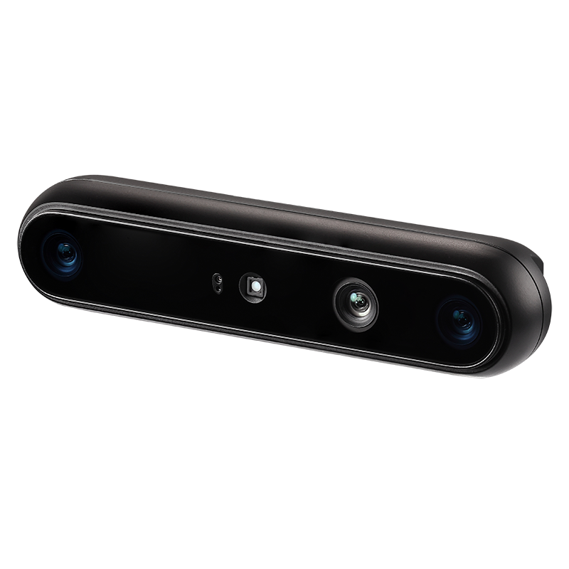
Orbbec Gemini 335L, yüksek çözünürlüklü stereo görüntü sensörleri, IR lazer nokta projektörü ve IR aydınlatma LED’i ile donatılmış bir RGB-D kameradır. Bu özellikler, kameranın daha yüksek kalitede derinlik görüntüleri oluşturmasını ve düşük ışık koşullarında daha iyi performans göstermesini sağlar.
Daha fazla bilgi için üreticinin dokümantasyonuna başvurunuz.
5.2.2 RPLIDAR 3C
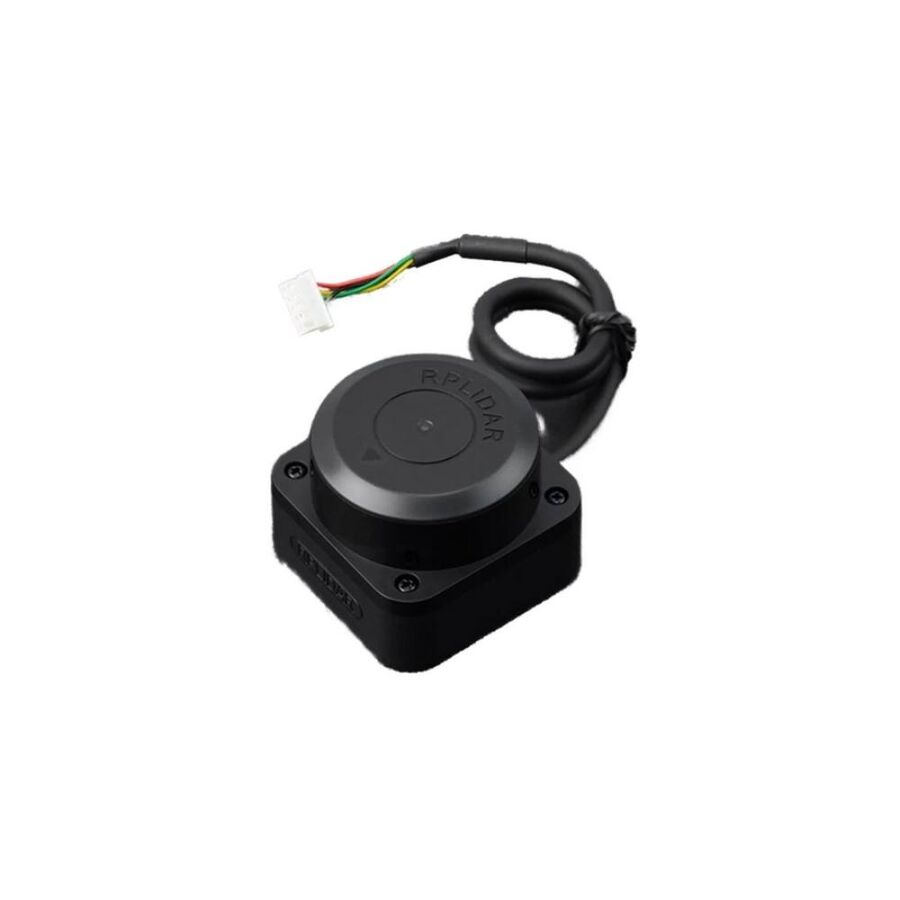
RPLIDAR 3C, 360 derece tarama gerçekleştirebilen ve 12 m menzile sahip bir lazer mesafe tarayıcısıdır. Robotun çevresinin iki boyutlu (2D) taramasını oluşturmak amacıyla kullanılır. OrbiRob ve OrbiRob Lite modellerinde bu sensör kullanılmaktadır. Daha fazla bilgi için buraya tıklayınız.
5.2.3 Mesafe Sensörleri
5.2.4 Uçurum Sensörleri
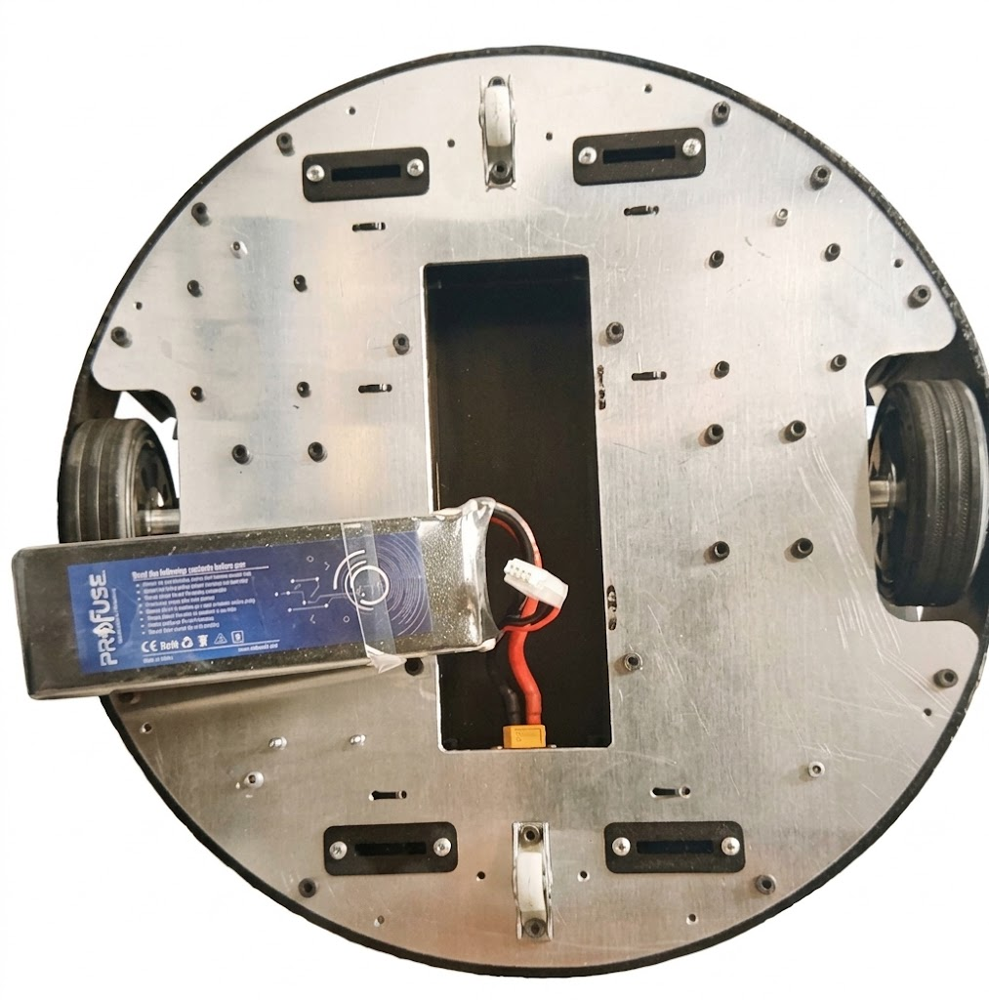
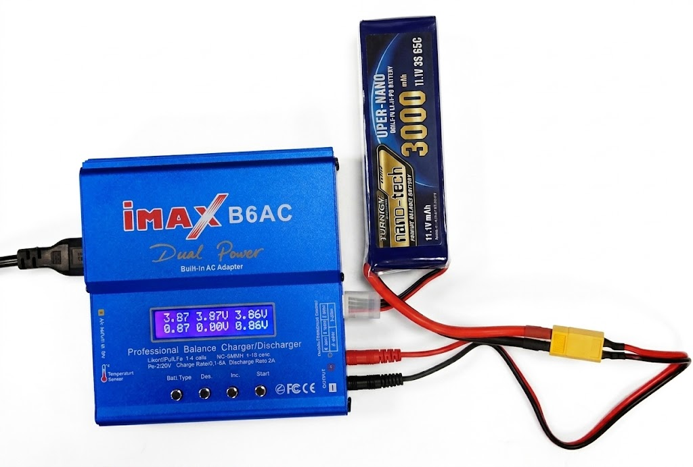
5.3 Bataryanın Çıkartılması
Bataryayı OrbiRob’dan çıkarmadan önce robotun tamamen kapalı olduğundan ve güç bağlantısının kesildiğinden emin olunuz. Bataryanın çıkarılması ve şarj edilmesi için aşağıdaki adımları sırasıyla uygulayınız:
- 1.
-
2.
Bataryayı bölmesinden dikkatlice çıkarınız. Bataryanın bölmeden çıkarılmış durumu Şekil 5.5(c)’de gösterilmektedir.
-
3.
Çıkarılan bataryayı şarj cihazına bağlayınız. Bataryanın robot üzerinden çıkarıldıktan sonra şarj cihazına bağlanarak şarj edilmesi Şekil 5.5(d)’de gösterilmektedir.
-
4.
Şarj işlemi tamamlandıktan sonra şarj cihazının bağlantısını kesiniz ve bataryayı tekrar OrbiRob’un batarya bölmesine yerleştiriniz.
Bataryayı çıkarma veya takma işlemi sırasında bağlantı noktalarına ve kablolara zarar vermemeye özen gösteriniz. Batarya bölmesi kapağının robot çalıştırılmadan önce düzgün şekilde kapatıldığından emin olunuz.
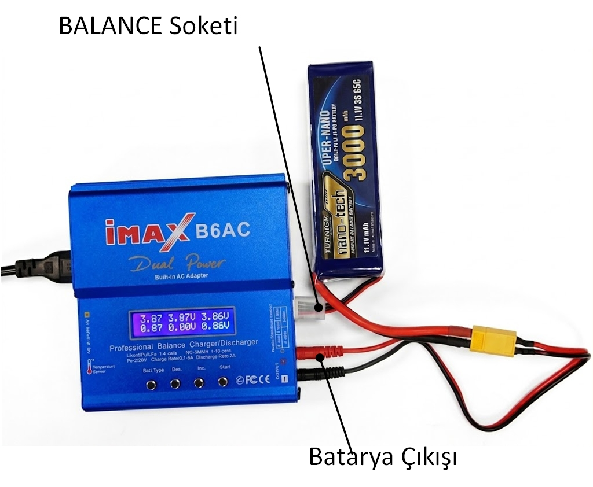
5.4 Bataryanın Şarj Edilmesi
Bataryanın iMAX B6AC şarj cihazı ile şarj edilmesi sırasında aşağıdaki adımlar sırasıyla uygulanmalıdır.
-
1.
Batarya robot üzerinden çıkarılmalıdır. Şarj işlemi sırasında batarya robot ile bağlantılı olmamalıdır.
-
2.
Şarj işleminden önce batarya kontrol edilmelidir. Bataryada şişme, deformasyon, fiziksel hasar veya anormal ısınma görülmesi durumunda batarya şarj edilmemelidir.
-
3.
iMAX B6AC şarj cihazı düz, kuru ve yanıcı olmayan bir yüzeye yerleştirilmelidir.
-
4.
Şarj cihazının AC güç kablosu elektrik prizine bağlanmalı ve şarj cihazı açılmalıdır.
-
5.
Bataryanın ana güç konnektörü, uygun şarj kablosu kullanılarak iMAX B6AC’nin BATTERY çıkışına bağlanmalıdır.
-
6.
Bataryanın balans konnektörü, iMAX B6AC üzerindeki batarya hücre sayısına uygun BALANCE soketine bağlanmalıdır. Konnektörün doğru yönde ve doğru polaritede takıldığı kontrol edilmelidir.
-
7.
Şarj cihazının menüsünden LiPo BATT seçeneği seçilmelidir.
-
8.
Normal kullanım sonrasında bataryanın şarj edilmesi için LiPo BALANCE CHG programı seçilmelidir.
-
9.
Şarj akımı, bataryanın teknik özelliklerine ve üretici tarafından belirtilen şarj değerine uygun olarak ayarlanmalıdır. İzin verilen maksimum şarj akımı aşılmamalıdır.
-
10.
Şarj işlemine başlamadan önce şarj cihazının algıladığı batarya gerilimi ve hücre sayısı kontrol edilmelidir. Algılanan hücre sayısı bataryanın gerçek hücre sayısıyla aynı değilse şarj işlemi başlatılmamalıdır.
-
11.
Tüm ayarlar kontrol edildikten sonra START/ENTER düğmesine basılarak şarj işlemi başlatılmalıdır.
-
12.
Şarj işlemi sırasında şarj cihazının ekranı üzerinden toplam batarya gerilimi ve münferit hücre gerilimleri düzenli olarak kontrol edilmelidir. Hücre gerilimleri arasında anormal bir farklılık görülmesi durumunda şarj işlemi durdurulmalıdır.
-
13.
Şarj işlemi süresince batarya gözetim altında tutulmalıdır. Bataryada aşırı ısınma, şişme veya başka bir anormallik görülmesi durumunda şarj işlemi derhal durdurulmalıdır.
-
14.
Şarj işlemi tamamlandığında şarj cihazının işlemi sonlandırdığı ve bataryanın tamamen şarj edildiği kontrol edilmelidir.
-
15.
Şarj işlemi tamamlandıktan sonra batarya ile şarj cihazı arasındaki bağlantı kesilmelidir. Konnektörler sökülürken kısa devre oluşmamasına dikkat edilmelidir.
-
16.
Batarya kullanılmayacaksa robot üzerinden ayrı olarak, kuru, serin ve güvenli bir ortamda muhafaza edilmelidir.
Uyarı: Batarya bağlanmadan önce şarj cihazındaki batarya tipi, hücre sayısı, şarj modu ve şarj akımı mutlaka kontrol edilmelidir. Yanlış şarj ayarlarının kullanılması bataryanın zarar görmesine, aşırı ısınmasına, yangına veya patlamaya neden olabilir.
Önemli: Lityum tabanlı bataryaların şarj edilmesinde LiPo BALANCE CHG modu kullanılmalıdır. Balans konnektörü yalnızca batarya hücre sayısına uygun bağlantı noktasına ve doğru polaritede bağlanmalıdır.
5.5 Teknik Özellikler
OrbiRob’un teknik özellikleri Tablo 5.1’de sunulduğu üzeredir:
| Özellik | Değer |
|---|---|
| Boyutlar ( G Y) | 35 cm 40 cm |
| Ağırlık | |
| Temel Platform | OrbiRob mobil taban platformu |
| Tekerlek Çapı | 80mm |
| Yerden Yükseklik | 20mm |
| Yerleşik Bilgisayar | Raspberry Pi 5 32GB |
| Maksimum Doğrusal Hız | |
| Maksimum Açısal Hız | |
| Maksimum Taşıma Kapasitesi | |
| Çalışma Süresi | |
| Şarj Süresi | |
| LiDAR | Slamtec RPLidar C1 |
| Kamera | Orbbec Genesis 335L |
| USB Genişletme | 1 USB A Çıkış |
| HDMI Bağlantı | 1 HDMI Çıkış |
| Ekran | TFT LCD Dokunmatik Ekran |
| Düğmeler ve Anahtarlar | Açma-kapatma anahtarı |
| Batarya | Lipo 6200 mA saat |
| Şarj Cihazı | IMAX B6 AC veya muad |
Bölüm 6 Hata Durumları
6.1 Sorun Giderme
| Sorun | Olası çözüm |
|---|---|
| Robot hareket etmiyor | Gücü, şarj durumunu ve çalışma modunu kontrol ediniz. |
| Seri iletişim yok | Kabloyu, arayüz ayarlarını ve bağlantıyı kontrol ediniz. |
| Beklenmeyen hareket | Robotu durdurunuz ve komut dizisini kontrol ediniz. |
| Çalışma süresi kısa | Bataryayı tamamen şarj ediniz ve batarya durumunu kontrol ediniz. |
Sorun devam ederse çalışmayı durdurunuz ve devam etmeden önce ilgili teknik dokümantasyona başvurunuz.
OrbiRob ile ilgili teknik dokümantasyona, kaynak kodlarına ve yazılım paketlerine GitHub sayfası üzerinden erişebilirsiniz.
https://github.com/SonaRobotics/OrbiRob
Github sayfasına erişim için aşağıdaki eposta adresine
OrbiRob Github erişim konulu bir eposta gönderilmeli ve epostada OrbiRob seri numarası bildirilmelidir:
info@sonarobotics.tech
6.2 Teknik Destek
Teknik destek için info@sonarobotics.tech eposta adresine aşağıdaki bilgileri içeren bir eposta gönderiniz:
-
•
Robot modeli, seri numarası ve yapılandırması
-
•
Gözlenen davranışın açıklaması
-
•
Sorunu yeniden oluşturan adımlar
-
•
İrtibat bilgileriniz
Kullanım ve güvenlik bilgilerinin her zaman erişilebilir olması için bu kılavuzu robot ve aksesuarlarıyla birlikte saklayınız.
Bölüm A Ekler
A.1 Yazılım Kaynakları
Yazılım
Ubuntu
-
•
Ubuntu 24.04: https://releases.ubuntu.com/24.04/
Raspberry Pi
-
•
Raspberry Pi Imager: https://www.raspberrypi.com/software/
-
•
Raspberry Pi Pinout: https://pinout.xyz/
ROS 2 (ROS 2 Jazzy Jalisco)
-
•
Dokümantasyon: https://docs.ros.org/en/jazzy/index.html
-
•
Ubuntu (Debian) Kurulumu: https://docs.ros.org/en/jazzy/Installation/Ubuntu-Install-Debs.html
-
•
Nav2 Dokümantasyonu: https://docs.nav2.org/
-
•
Nav2 GitHub: https://github.com/ros-planning/navigation2
Orbbec Gemini 335L
-
•
Orbbec Gemini 335L ürün bilgileri: https://github.com/orbbec/OrbbecSDK_v2/releases
-
•
API Dokümantasyonu:
SLAMTEC
-
•
RPLIDAR 3C: https://www.slamtec.com/en/s3/
-
•
RPLIDAR ROS: https://github.com/Slamtec/rplidar_ros/tree/ros2
A.2 En Güncel Raspberry Pi İmajını Yükleme
Raspberry Pi’yi yeni bir imajla sıfırlamak, Raspberry Pi’nin tamamen yeniden yapılandırılmasını sağlar. Sistem, kablolu bağlantının veya genel işletim sisteminin çalışmasını bozacak şekilde değiştirilmişse bu yöntem önerilir.
Uyarı: Raspberry Pi’ye yeni bir imaj yüklemek, daha önce yaptığınız tüm değişiklikleri silecektir. Devam etmeden önce değişikliklerinizi harici bir ortama kaydedin.
En güncel Raspberry Pi imajlarını https://download.cdimage.ubuntu.com/ubuntu/releases/24.04/release/?utm_source=chatgpt.com adresinde bulabilirsiniz.
-
•
Kullanılan ROS dağıtımına ve robot modeline uygun en güncel imajı indirin.
-
•
İndirilen zip dosyasını açarak .img dosyasını elde edin.
-
•
Robotunuzu kapatın ve ardından Raspberry Pi üzerindeki microSD kartı çıkarın.
-
•
microSD kartı bilgisayarınıza takın. Bir adaptöre ihtiyacınız olabilir.
-
•
dcfldd imaj yazma aracını yükleyin.
sudo apt install dcfldd
-
•
Aşağıdaki komutu çalıştırarak SD kartınızı belirleyin:
lsblk -d -e7
-
•
SD kartın mmcblk0 veya sdb gibi bir ada sahip olması gerekir.
-
•
Mevcut imajınızın yedeğini almak istiyorsanız, bunu şimdi gerçekleştirin:
sudo dd if=/dev/<SD_NAME> of=<IMAGE_PATH> bs=1M
SD_NAME, aygıtın adıdır (örneğin ‘mmcblk0‘, ‘sda‘ vb.). IMAGE_PATH, imajın kaydedileceği konumun yoludur; örneğin ‘~/OrbiRob_images/backup_image‘.
-
•
OrbiRob_setup aracından SD kart yazma betiğini alın ve SD karta yazın:
Jazzy
wget https://raw.githubusercontent.com/turtlebot/OrbiRob_setup/jazzy/scripts/sd_flash.sh bash sd_flash.sh /path/to/downloaded/image.img
-
•
Talimatları izleyin ve SD kartın yazılmasının tamamlanmasını bekleyin.
-
•
SD kartı bilgisayarınızdan çıkarın.
-
•
Yazdırılmış SD kartı takmadan önce Raspberry Pi 4’ün kapalı olduğundan emin olun.
-
•
OrbiRob’unuzu yapılandırmak için Robot Kurulumu bölümündeki adımları izleyin.
A.3 ROS 2 Geliştirme Ortamı İçin Öneri
ROS 2 tabanlı robot geliştirme ortamlarında uzaktan erişim seçilirken yalnızca masaüstünün görüntülenebilmesi değil, grafik uygulamaların performansı da dikkate alınmalıdır. Özellikle RViz, Gazebo, Qt Creator ve Visual Studio Code gibi uygulamalar uzaktan bağlantı sırasında yüksek miktarda grafik veri aktarımı gerektirebilir.
-
•
Aynı yerel ağ içerisinde kullanım: Ubuntu Remote Desktop (RDP) veya xrdp tercih edilebilir.
“‘
-
•
İnternet üzerinden kolay ve ücretsiz erişim: RustDesk tercih edilebilir.
-
•
Grafik performansının öncelikli olduğu kullanım: NoMachine değerlendirilebilir.
-
•
Kurumsal veya güvenlik kontrollü ağ: RDP veya VNC bağlantısının VPN üzerinden gerçekleştirilmesi önerilir. “‘
Uzaktan masaüstü bağlantısının performansı; ağ bant genişliği, ağ gecikmesi, robot bilgisayarının işlemci ve GPU kapasitesi ve kullanılan uzak masaüstü protokolüne bağlıdır. Gazebo ve RViz gibi grafik ağırlıklı uygulamalarda düşük gecikmeli ve yüksek bant genişlikli bir ağ bağlantısı tercih edilmelidir.
Robot bilgisayarına internet üzerinden uzaktan erişim sağlanacaksa, uzak masaüstü servislerinin doğrudan internete açılması önerilmez. Bunun yerine VPN, güvenli ağ geçidi veya uygun bir uzaktan erişim altyapısı kullanılmalıdır.
Not: Uzaktan masaüstü bağlantısı üzerinden gerçekleştirilen ROS 2 çalışmaları sırasında robotun fiziksel olarak hareket edebileceği dikkate alınmalıdır. Robot hareket komutları gönderilmeden önce robotun çevresinin güvenli olduğundan ve acil durdurma mekanizmasının erişilebilir olduğundan emin olunmalıdır.
A.4 Raspberry Pi Pico ile micro-ROS
Raspberry Pi Pico, düşük seviyeli gerçek zamanlı kontrol ve sensör uygulamalarında kullanılabilen bir mikrodenetleyici kartıdır. Pico üzerinde doğrudan tam bir ROS 2 sistemi çalıştırmak yerine, ROS 2 ile haberleşmek için micro-ROS kullanılabilir.
micro-ROS, kaynakları sınırlı mikrodenetleyicilerin ROS 2 sistemlerine dahil edilmesini sağlayan bir yazılım altyapısıdır. Bu sayede Raspberry Pi Pico üzerinde çalışan bir uygulama, Ubuntu üzerinde çalışan ROS 2 sistemindeki düğümlerle topic, service ve diğer ROS 2 iletişim mekanizmaları üzerinden haberleşebilir.
OrbiRob’da bu yaklaşım, yüksek seviyeli robot yazılımı ile düşük seviyeli donanım kontrolünün birbirinden ayrılması amacıyla kullanılabilir.
A.4.1 micro-ROS Mimarisi
micro-ROS kullanımında ROS 2 sistemi ile mikrodenetleyici arasında doğrudan bir ROS 2 düğümü çalıştırılması yerine bir micro-ROS Agent kullanılır.
Genel mimari Şekil A.1’de gösterilmektedir.
Ubuntu 24.04 ROS 2 Jazzy | micro-ROS Agent | USB / UART | Raspberry Pi Pico micro-ROS Client | +-----------+-----------+ | | | Encoder PWM Sensors | | | Motors Motors IMU
Ubuntu 24.04 / ROS 2 Jazzy[2mm] ROS 2 Nodes micro-ROS Agent[3mm] [3mm] USB / UART[3mm] [3mm] Raspberry Pi Pico micro-ROS Client[2mm] Encoder Motor PWM Sensors
Burada iki temel bileşen bulunmaktadır:
-
•
micro-ROS Client: Raspberry Pi Pico üzerinde çalışır ve mikrodenetleyicinin ROS 2 sistemine bağlanmasını sağlar.
-
•
micro-ROS Agent: Ubuntu bilgisayarda çalışır ve Pico üzerindeki micro-ROS Client ile ROS 2 sistemi arasındaki iletişimi sağlar.
Pico üzerinde çalışan uygulama böylece bir ROS 2 düğümü gibi davranabilir. Örneğin encoder verileri ROS 2 topic’leri üzerinden yayınlanabilir ve motor komutları ROS 2 topic’lerinden alınabilir.
A.4.2 OrbiRob’da Kullanım
OrbiRob’un yazılım mimarisinde Raspberry Pi 5 yüksek seviyeli işlemleri, Raspberry Pi Pico ise düşük seviyeli donanım işlemlerini gerçekleştirir.
-
•
Raspberry Pi 5
-
–
ROS 2
-
–
SLAM
-
–
Navigation / Nav2
-
–
Görüntü işleme ve algılama
-
–
Davranış ağaçları
-
–
Yüksek seviyeli robot kontrolü
-
–
RViz ve diğer grafiksel araçlar
“‘
-
–
-
•
Raspberry Pi Pico
-
–
Motor PWM kontrolü
-
–
Encoder okuma
-
–
Düşük seviyeli motor kontrolü
-
–
PID kontrolü
-
–
Sensörlerin okunması
-
–
Gerçek zamanlı giriş/çıkış işlemleri
-
–
Limit switch ve benzeri donanım girişleri
“‘
-
–
Bu yapı Şekil A.2’de özetlenmektedir.
OrbiRob[2mm] Raspberry Pi 5 ROS 2 Jazzy Navigation SLAM Perception Behavior Tree High-Level Control [4mm] [-1mm] micro-ROS[-1mm] [4mm] Raspberry Pi Pico Motor PWM Encoder PID Sensors
Bu görev dağılımının temel amacı, motor ve encoder gibi zamanlamaya duyarlı düşük seviyeli işlemleri Linux işletim sisteminden bağımsız bir mikrodenetleyici üzerinde gerçekleştirmektir.
A.4.3 Ubuntu 24.04 ve ROS 2 Jazzy
Ubuntu 24.04 üzerinde micro-ROS kullanmak için ROS 2’nin uygun bir sürümünün kurulmuş olması gerekir. Ubuntu 24.04 için önerilen ROS 2 dağıtımı ROS 2 Jazzy sürümüdür.
ROS 2 ortamının etkinleştirilmesi için:
source /opt/ros/jazzy/setup.bash
ROS 2’nin doğru şekilde kurulduğunu kontrol etmek için:
ros2 --version
komutu kullanılabilir.
A.4.4 micro-ROS Ortamının Kurulması
micro-ROS geliştirme ortamı için ayrı bir workspace oluşturulabilir:
mkdir -p ~/uros_ws/src cd ~/uros_ws/src
Ardından micro_ros_setup paketi klonlanır:
git clone -b jazzy https://github.com/micro-ROS/micro_ros_setup.git
Gerekli bağımlılıklar aşağıdaki komutlarla kurulabilir:
cd ~/uros_ws rosdep update rosdep install --from-paths src --ignore-src -y
Workspace oluşturulduktan sonra derlenir:
colcon build
Derleme tamamlandıktan sonra micro-ROS ortamı etkinleştirilir:
source ~/uros_ws/install/local_setup.bash
Her yeni terminalde otomatik olarak etkinleştirilmesi isteniyorsa aşağıdaki satır ~/.bashrc dosyasına eklenebilir:
source ~/uros_ws/install/local_setup.bash
A.4.5 Raspberry Pi Pico Geliştirme Ortamı
Raspberry Pi Pico üzerinde micro-ROS uygulaması geliştirmek için Pico SDK ve ARM derleme araçlarının kurulması gerekir.
Gerekli temel paketler:
sudo apt update sudo apt install cmake g++ gcc-arm-none-eabi libnewlib-arm-none-eabi git python3
Raspberry Pi Pico SDK aşağıdaki şekilde indirilebilir:
cd ~ git clone --recurse-submodules https://github.com/raspberrypi/pico-sdk.git pico-sdk
SDK yolu ortam değişkeni olarak tanımlanır:
echo ’export PICO_SDK_PATH=$HOME/pico-sdk’ >> ~/.bashrc source ~/.bashrc
A.4.6 Pico Üzerinde micro-ROS
Raspberry Pi Pico için micro-ROS uygulamalarında Pico SDK tabanlı micro-ROS desteği kullanılabilir. Proje aşağıdaki şekilde indirilebilir:
cd ~ git clone https://github.com/micro-ROS/\ micro_ros_raspberrypi_pico_sdk.git
Proje dizinine geçilerek derleme klasörü oluşturulur:
cd ~/micro_ros_raspberrypi_pico_sdk mkdir build cd build cmake .. make
Derleme sonucunda Raspberry Pi Pico’ya yüklenebilecek bir .uf2 dosyası oluşturulur.
Pico, USB üzerinden bilgisayara bağlanırken BOOTSEL düğmesine basılı tutulduğunda USB depolama aygıtı olarak görülebilir. Oluşturulan .uf2 dosyası Pico’nun RPI-RP2 sürücüsüne kopyalanarak firmware yüklenebilir.
A.4.7 Pico’nun Ubuntu’ya Bağlanması
Pico USB üzerinden Ubuntu bilgisayara bağlandığında seri haberleşme aygıtı olarak görünebilir.
Bağlantıyı kontrol etmek için:
ls /dev/ttyACM*
komutu kullanılabilir.
Örneğin sistem aşağıdaki aygıtı gösterebilir:
/dev/ttyACM0
Pico’nun farklı bir seri aygıt adıyla görünmesi mümkündür. Bu durumda micro-ROS Agent komutunda ilgili aygıt adı kullanılmalıdır.
A.4.8 micro-ROS Agent’ın Çalıştırılması
Ubuntu tarafında Pico ile ROS 2 arasındaki iletişimi sağlamak için micro-ROS Agent çalıştırılır.
USB seri bağlantısı için örnek komut:
source /opt/ros/jazzy/setup.bash source ~/uros_ws/install/local_setup.bash micro-ros-agent serial --dev /dev/ttyACM0 -b 115200
Burada:
-
•
/dev/ttyACM0, Pico’nun seri aygıtını,
-
•
115200, seri haberleşme baud hızını
belirtmektedir.
Kullanılan Pico firmware’i farklı bir baud hızı gerektiriyorsa Agent tarafındaki değer firmware ile aynı olacak şekilde değiştirilmelidir.
A.4.9 ROS 2 Haberleşmesinin Test Edilmesi
micro-ROS Agent çalıştırıldıktan sonra ayrı bir terminal açılarak ROS 2 ortamı etkinleştirilir:
source /opt/ros/jazzy/setup.bash source ~/uros_ws/install/local_setup.bash
ROS 2 sistemindeki düğümleri görüntülemek için:
ros2 node list
Topic listesini görüntülemek için:
ros2 topic list
kullanılabilir.
Pico üzerinde çalışan micro-ROS uygulaması başarılı şekilde ROS 2 sistemine bağlandığında, uygulamanın oluşturduğu node ve topic’ler bu listelerde görülebilir.
Örneğin encoder verileri için:
ros2 topic echo /encoder_left
komutu kullanılabilir.
Benzer şekilde motor komutlarının gönderilmesi için örneğin:
ros2 topic pub /motor_command
std_msgs/msg/Float32
"{data: 0.5}"
kullanılabilir.
Kullanılan topic isimleri ve mesaj tipleri, Pico üzerinde çalışan uygulamaya göre değişir.
A.4.10 Örnek Haberleşme Yapısı
OrbiRob için örnek bir düşük seviyeli kontrol arayüzü aşağıdaki gibi tasarlanabilir:
/cmd_vel | v Raspberry Pi 5 | | micro-ROS v Raspberry Pi Pico | +----> Left Motor PWM | +----> Right Motor PWM | +----> Encoder Left | +----> Encoder Right | +----> Sensor Data
Daha ayrıntılı bir ROS 2 arayüzünde örneğin aşağıdaki topic’ler kullanılabilir:
-
•
/motor/left_command
-
•
/motor/right_command
-
•
/encoder/left
-
•
/encoder/right
-
•
/imu/data
-
•
/battery/state
Gerçek uygulamada topic isimleri, mesaj tipleri ve kontrol döngüsü frekansları OrbiRob’un donanım ve yazılım mimarisine göre belirlenmelidir.
A.4.11 Düşük Seviyeli Motor Kontrolü
Pico’nun önemli kullanım alanlarından biri motorların düşük seviyeli kontrolüdür.
Örneğin Raspberry Pi 5 tarafından gönderilen bir hız komutu Pico tarafından alınabilir. Pico daha sonra:
-
1.
hedef motor hızını belirler,
-
2.
encoder değerlerini okur,
-
3.
gerçek motor hızını hesaplar,
-
4.
PID kontrolü uygular,
-
5.
motor PWM sinyalini günceller.
Bu yapı sayesinde Raspberry Pi 5’in ROS 2, Nav2 veya görüntü işleme gibi yüksek işlem yüküne sahip görevlerle meşgul olması, motor kontrolünün zamanlamasını doğrudan etkilemez.
A.4.12 Pico ve Pico 2
Raspberry Pi Pico ve Raspberry Pi Pico 2 farklı mikrodenetleyici platformlarıdır.
-
•
Raspberry Pi Pico: RP2040 mikrodenetleyicisini kullanır.
-
•
Raspberry Pi Pico 2: RP2350 mikrodenetleyicisini kullanır.
Kullanılacak firmware ve SDK yapılandırması seçilen Pico modeline uygun olmalıdır. Özellikle Pico 2 kullanılması durumunda micro-ROS projesinin ilgili platform desteği ve güncel dokümantasyonu kontrol edilmelidir.
A.4.13 micro-ROS Kullanımında Dikkat Edilmesi Gerekenler
micro-ROS, mikrodenetleyicileri ROS 2 sistemlerine bağlamak için güçlü bir yöntem olmakla birlikte, Pico üzerinde tam bir ROS 2 işletim sistemi çalışmadığı unutulmamalıdır.
Aşağıdaki görevler Raspberry Pi 5 gibi daha güçlü bir bilgisayarda çalıştırılmalıdır:
-
•
RViz
-
•
Gazebo
-
•
Nav2
-
•
SLAM
-
•
Görüntü işleme
-
•
Büyük yapay zekâ modelleri
-
•
Yüksek seviyeli davranış planlama
Pico ise düşük gecikmeli ve zamanlaması kritik işlemler için kullanılmalıdır.
Ayrıca USB üzerinden haberleşme sırasında kullanılan seri portun sistem tarafından değişebileceği unutulmamalıdır. Pico’nun bağlantısı kesilip yeniden bağlandığında /dev/ttyACM0 yerine farklı bir aygıt adı atanabilir.
A.4.14 Sorun Giderme
A.4.14.1 Pico görünmüyor
Aşağıdaki komutla USB aygıtları kontrol edilebilir:
ls /dev/ttyACM*
Sonuç alınamıyorsa Pico’nun USB bağlantısı kontrol edilmelidir.
Ayrıca sistem günlükleri aşağıdaki komutla incelenebilir:
dmesg | tail
A.4.14.2 micro-ROS Agent Pico’ya bağlanamıyor
Öncelikle doğru seri portun kullanıldığından emin olun:
ls /dev/ttyACM*
Ardından Agent’ın kullandığı port ve baud hızı Pico firmware’i ile aynı olmalıdır.
Örneğin:
micro-ros-agent serial --dev /dev/ttyACM0 -b 115200
A.4.14.3 Pico ROS 2 topic’lerinde görünmüyor
Öncelikle Agent’ın çalıştığını kontrol edin. Daha sonra ayrı bir terminalde:
source /opt/ros/jazzy/setup.bash ros2 node list ros2 topic list
komutları çalıştırılmalıdır.
ROS 2 ortamında farklı bir ROS_DOMAIN_ID kullanılıyorsa, Agent ve ROS 2 düğümlerinin aynı domain içerisinde olduğundan emin olunmalıdır.
A.4.15 Özet
Raspberry Pi Pico, OrbiRob’un düşük seviyeli donanım kontrol katmanında micro-ROS kullanılarak ROS 2 sistemine dahil edilebilir. Bu mimaride Raspberry Pi 5 yüksek seviyeli ROS 2 uygulamalarını çalıştırırken Pico motorlar, encoder’lar ve diğer zamanlamaya duyarlı donanım işlemlerini gerçekleştirebilir.
Ubuntu 24.04 üzerinde ROS 2 Jazzy ve micro-ROS Agent çalıştırılarak Pico ile ROS 2 sistemi arasında USB veya uygun başka bir haberleşme bağlantısı kurulabilir.
Önerilen genel yapı:
Ubuntu 24.04 | ROS 2 Jazzy | micro-ROS Agent | USB / UART | Raspberry Pi Pico | +---+---+---+ | | | | PWM Encoder Sensors | | | +---+---+ | Motors
Bu yapı, yüksek seviyeli robot yazılımı ile düşük seviyeli gerçek zamanlı donanım kontrolünün birbirinden ayrılmasını sağlayarak daha öngörülebilir bir robot kontrol mimarisi oluşturabilir.